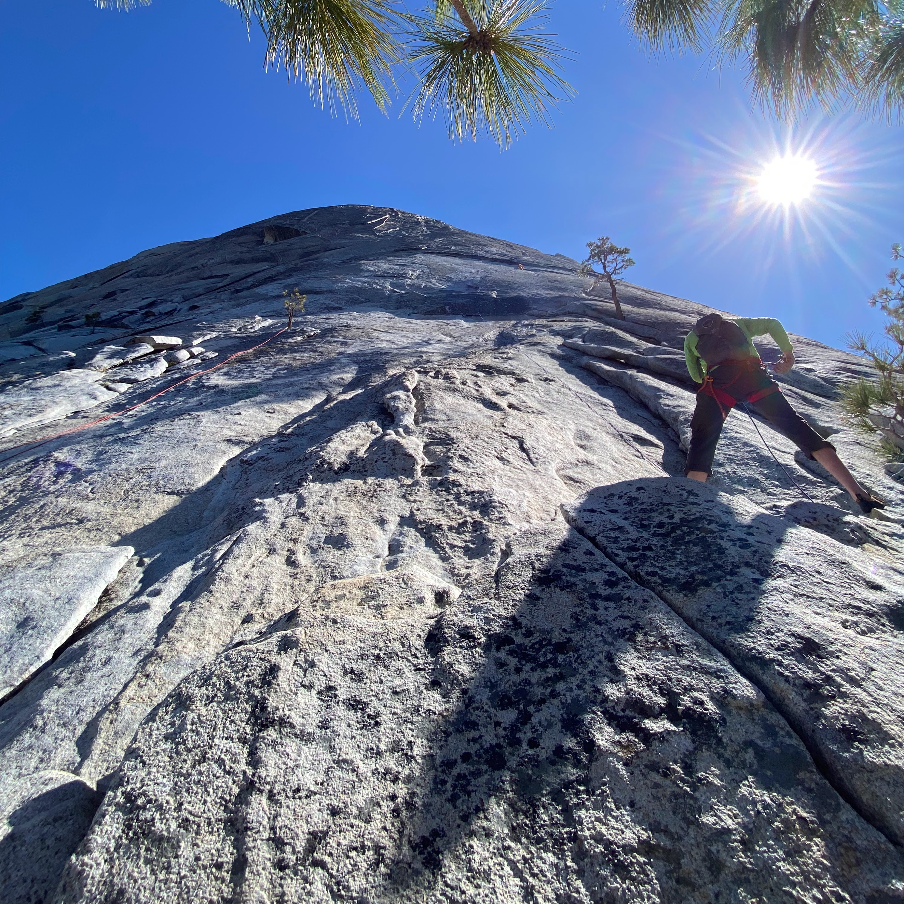
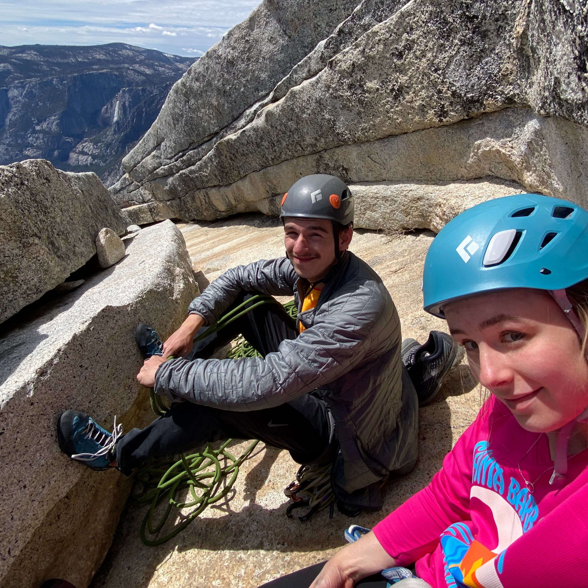

Ethan Vaughan
Snake Dike
May 4, 2022
After finishing up the semester in San Francisco, my girlfriend Ashley and I drove home to Auburn to spend the night before driving down to Yosemite for a few days. We packed our bags for a two night backpacking and climbing trip.
May 5, 2022
The drive down went well and we got into the park at about 5:00pm. We went to the wilderness center next the the Village Store and got our wilderness permit to stay in the Little Yosemite Valley campground. We began our hike around 6:00pm. We cruised to the mist trail and got absolutely soaked walking up to Vernal Falls. We didn't spend much time at the falls before continuing the hike, and just as we were leaving we ran into a guy from UC Berkeley that would visit his girlfriend in the San Francisco house often. The hike up to Nevada Falls was brutal. Each of our packs weighed about 30 pounds and the trail was so steep the entire time. Eventually we made it to the falls and knew that it was going to be smooth sailing from there. We made it into camp around 8:00pm. I set up my tent as Ashley set up her hammock and then we made (something) for dinner. We got to bed early in preparation to wake up early the next morning.
May 6, 2022
We woke up at about 5:00am and began to make oatmeal for breakfast and get our gear ready, a 70m rope, some BD C4s .3-3,a set of BD nuts, 4 extended draws, 2 slings, and some extra draws and biners. As I was heating the water for the oatmeal I realized that our gas can was nearly empty and this was probably its last bit of fuel (it was). After we ate I took the rope on my back and Ashley had our backpack for food, we both put our harness on and clipped the gear we needed. We knew where to go to find the climbers trail because we had found it the night before. The first half of the trek to the climb was through semi-thick forest with only a minimal trail and cairns to follow. After we got off the forest floor we found ourselves in some class 3/4 hiking up to the base of the climb. The weather was great and we were alone on the trail. We got to the climb around 7:15am we decided to take a little break and eat some snacks before starting. As we were snacking two other climbers, Mark and Bill, reached the base of the climb as well. Bill said he had done the climbing half a dozen times and was taking Mark on it for the first time. Bill gave us some beta and we let them go first. After Mark left the top of the first pitch we began our climb.
Pitch 1 (5.7):
Some no holds slab climbing to start helped build confidence in my shoes. I did as Bill suggested and climbed up on the right below a roof where I placed my first nut in a small crack, I traversed left below a golden section of slicker rock and then went straight up to the roof where I could place my next piece, an extended #3. I continued left and around the roof, placed a #1 and made my way to the belay. Mark was belaying at the next pitch and told me to traverse right before heading up to the first bolt.
Pitch 2 (5.7):
I did what Mark said and made my way up the second pitch, followed a shallow crack up to a pair of bolts, clipped one and traversed right along the crack to some slab climbing, I placed a #.75 and made my way up the slab to the next belay station. By the time Ashley made it to me Bill and Mark we're well ahead of us.
Pitch 3 (5.7):
This was by far the most difficult pitch on the entire route. No individual move was that difficult in itself, but it was mentally exhausting. I started the pitch by going up a bit then began the friction traverse left to a bolt I saw. Each step I took was onto the slightest dishes on what felt like a 70-80º slope. After a few steps I saw a bolt well below me and remembered what Bill had told me about this pitch, “don't go up, just go straight left to a bolt then continue to the dike”. Thanks Bill. As I went further the distance between the bolt and I got bigger and bigger. If one of my very sketchy feet were to slip I would pendulum swing and slide against sharp granite for quite some time. I eventually made it to the dike, clipped a bolt and climbed the 50 feet of 5.4 without protection to the belay station. Since I went off route and clipped a bolt that meant that Ashley had to do the same. She made it up to the bolt, unclipped, then down climbed about 5 feet to the easier traverse and cruised up to me.
Pitch 4 (5.5):
Next up was about 60 feet of runout dike climbing to a bolt (optional belay) and then another 100 feet of runout to the belay station. The most runout pitch probably, I faced it by just not thinking about a fall and focusing on controlled solid movements.
Pitch 5 (5.6):
Ashley had just made it up to the belay when a free soloist caught up with her and passed us, but not before asking where the route went (a bit concerning). At the beginning of this pitch the dike split and the route followed the right branch. There were a few features, a bolt and a crack that I could place a cam in, then a small 5.3 section to the next belay station.
Pitch 6 (5.5):
Another very runout section of dike climbing with a few chicken heads I put slings on for protection. Just before the end of the route the dike disappeared and a bolt protects you for a small section of steep slab climbing.
Pitch 7 (5.5):
In leaving the belay station I was also leaving the last pair of bolts on the route. Some easy friction climbing lead to a finger crack for gear and that lead up to a ledge where I built a belay anchor.
Pitch 8 (5.5):
The last and likely the easiest pitch of the route due to the low angle and abundance of features to grab and place gear. At the top of the pitch I built a belay anchor in a large alleyway made of granite.
Ashley made it up to me around 2:30pm and we took a little rest, ate a snack, and enjoyed the view. I racked everything away on my harness and tied the rope up, but we were far from done climbing. We climbed the 800 foot route, but had about 1,000 more feet of absolutely draining low angle slab climbing. For the first 100 feet or so a slip could have been near deadly. Towards the top I had to take a break about every 70 feet to let my calves rest for a minute. Once at the top we could see the familiar view and landscape of the top of Half Dome. We had to walk through some thin snow to get to where we wanted to eat and rest. For the first 10-15 minutes we were up there we were all alone. The sky was clear, the sun was bright, and the temperature was perfect. If not for my aching body that moment would have been perfect. After resting for a minute and eating lunch, a small group of guys were making it to the top of the cable route. We talked to them for a minute, got pictures for each other and began the descent down the cables together at about 4:15pm. I went in the front with Ashley behind me. I put on a pair of gloves, clipped my PA to a cable, and began to descend. This part was pretty sketchy considering that if one person were to fall they would drag the cable down the side of the cliff and slide down taking everyone else out with them. We would all be attached to the cable still, but would be sliding down the rock very quickly. I made it to the bottom and watched everyone else carefully make their way down.
Ashley and I then began the hike back to our campsite. The hike was all downhill and very pleasant. The trail was nearly empty the whole time. After the 3 mile hike we made it to the campsite and got ready to start dinner.
In the morning we had used the last bit of gas we had left for our camping stove and we needed to heat up some water for dinner. We gathered some sticks and small logs and I made a fire. Attempting to heat up the water without either getting ash in the pot or making the handle too hot to touch was tough but I eventually did it and we had salmon and ramen for dinner. After re-filling the water at the river we headed to bed.
May 7, 2022
We weren't really in a rush to get out in the morning so we took our time taking down the tent and packing everything away before leaving. We ended up leaving the campsite around 10:00am and made it to the car about 2 and a half hours later. We got some food at the Yosemite Village store and drove to the base of El Cap to look for climbers. Then left the park. The drive back was smooth and relaxing. Once we got home though I had to pack up the car to drive down to Santa Barbara the next day. Ashley was going to stay at home another night and have my mom drive her to the airport so she could see her family for a bit before meeting me down in Santa Barbara.
The whole trip was very quick and a bit exhausting, but it was a great experience and I will definitely be climbing snake dike again someday.